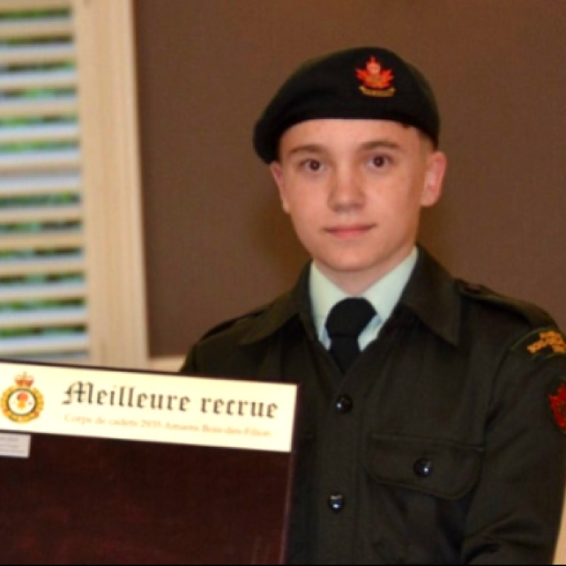
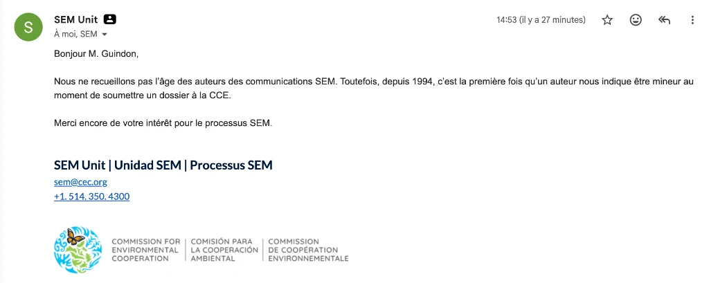
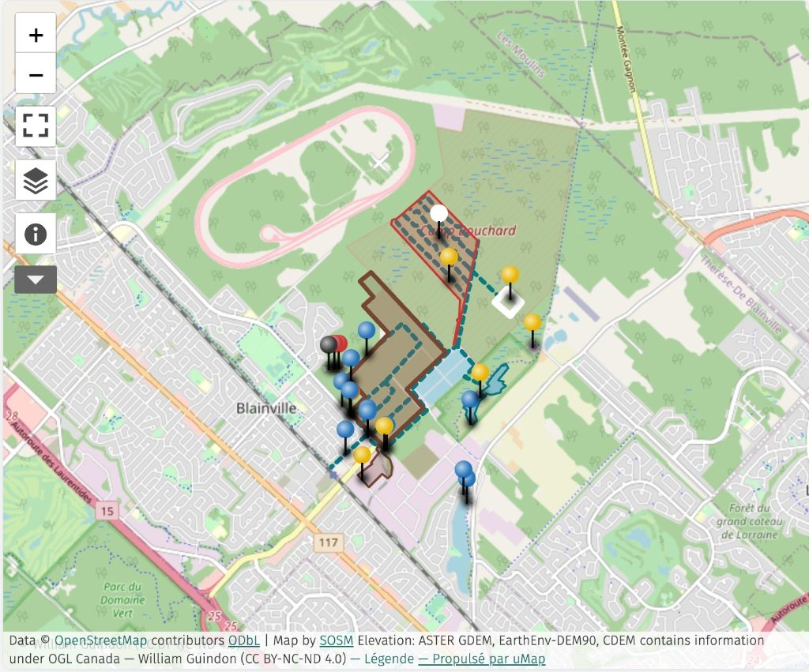

William Guindon
RÉPONSE DU CANADA : 16 OCTOBRE 2026
Le gouvernement fédéral est officiellement sommé de répondre (art. 24.27(3) de l'ACEUM) :
Demandes Médias, Entrevues & Contacts Presse Canaux directs et vérifiés pour journalistes et rédactions · Déplier pour voir ▾
Courriel officiel & Entrevues de presse ▾
Canal officiel direct pour les journalistes, chroniqueurs, rédactions et équipes d'enquête. Délai de réponse habituel garanti : 24 à 48 heures.
Canal chiffré décentralisé pour sources (Application Session) ▾
Pour les transmissions confidentielles de documents, pièces non biffées ou signalements de terrain sensibles. Chiffrement de bout en bout décentralisé, sans numéro de téléphone, sans trace d'adresse IP ni métadonnées :
05dc60b62a6ed477b1f0dc5ce1b6a9db7603bf39f1a0efe13c68d63a6cb8a7c072
Clé publique de chiffrement OpenPGP ▾
Pour chiffrer vos correspondances et pièces jointes par courriel vers contact@williamguindon.me :
1CAF 48B1 53AC 7DA2 996D 65B2 1EFC 7E58 63D8 FD77
« Même que l’usine soit conforme ou pas conforme, je veux juste la vérité. C’est ça mon but. »
— William Guindon, entrevue TVBL ↗
Tableau de bord — Dossier CCE SEM-26-003
État de la mobilisation et indicateurs environnementaux
Tourbière et écosystèmes rares ciblés par Stablex.
Concentration maximale mesurée vs normes.
Revue de presse officielle
Retrouvez les reportages d'enquête, entrevues audiovisuelles et publications dans les grands médias nationaux et régionaux.
Protection d’une tourbière à Blainville : Le combat d’un adolescent à l’ONU
« À 14 ans, William Guindon a saisi le Rapporteur spécial des Nations unies sur les substances toxiques pour dénoncer l'expansion de Stablex dans la Grande Tourbière. »
« François Legault, vous détruisez notre avenir »
« Lettre ouverte percutante adressée au premier ministre du Québec au lendemain de l'adoption sous bâillon du Projet de loi 93 facilitant l'agrandissement du site. »
CBC Podcasts : This Is Montreal
« Grand format audio et baladodiffusion de CBC News sur les enjeux métropolitains de la région de Montréal et la mobilisation pour la Grande Tourbière. »
Entrevue exclusive : La démarche historique devant la CCE
« Entrevue télévisée approfondie avec William Guindon expliquant les recours internationaux en vertu de l'ACEUM et la protection de la Grande Tourbière. »
Les As de l’info : Super William à la rescousse de la grande tourbière
« Portrait d'un jeune engagé qui utilise le droit international et la science pour protéger les espèces menacées et la biodiversité boréale. »
Blainville teenager takes Stablex fight international
« Investigative feature on how a 15-year-old student took on multinational waste operators and environmental deregulation via trinational legal mechanisms. »
Porter plainte à l’international pour faire respecter les lois en environnement
« En mai dernier, un adolescent du Québec a porté plainte contre le Canada auprès de la Commission de coopération environnementale... dans le cadre de l’agrandissement d’un site de déchets dangereux à Blainville. »
Dernières publications & Photos récentes
Suivez les derniers articles d'analyse et les photographies authentiques de la Grande Tourbière de Blainville et du dossier CCE SEM-26-003.

Preuve CCEConfirmation officielle CCE : Premier mineur de l'histoire du mécanisme SEM (depuis 1994)
Le Secrétariat de la CCE confirme formellement par écrit que William Guindon est le premier mineur en 32 ans à déposer une communication citoyenne.
Avis de clarification publique : Absence de collaboration et stricte indépendance
Mise au point officielle de William Guindon rappelant le caractère strictement individuel et autofinancé du dossier SEM-26-003.
Plaidoyer pour l'autonomie juridique des adolescents : briser le plafond de verre de l'âgisme
Face au paternalisme bureaucratique, William Guindon interpelle les parlementaires pour reconnaître la capacité civique des 14-17 ans.

Données géographiques SIG · OpenStreetMap & uMap Ouvrir en plein écran ↗
Espace Nations Autochtones
Territoire ancestral et solidarité environnementale
La Grande Tourbière de Blainville et les basses terres du Saint-Laurent sont situées sur des territoires traditionnels non cédés des Premières Nations, notamment les Kanien'kehá:ka (Mohawks) et les peuples Anishinaabeg.
Garde de la Terre & Justice Environnementale Intergénérationnelle
« Nous n'héritons pas de la terre de nos parents, nous l'empruntons à nos enfants. » Le dossier SEM-26-003 s'appuie sur la responsabilité partagée de préserver les milieux humides rares contre l'enfouissement de matières toxiques et industrielles.
Introduction
Un engagement précoce, une détermination sans compromis
William Guindon (né le 3 août 2011 à Sainte-Marthe-sur-le-Lac, au Québec) est un militant écologiste québécois, reconnu pour son engagement en faveur de la protection des écosystèmes et des droits des générations futures. Auteur à 14 ans de la communication officielle déposée auprès de la Commission de coopération environnementale (CCE) dans le cadre de l'ACEUM et d'un mémoire à l'ONU, il devient à 15 ans le premier mineur de l'histoire à remporter une décision positive de la CCE dans le dossier de la Grande Tourbière de Blainville.
Jeunesse et formation
William Guindon grandit dans la région des Laurentides, au Québec. Il complète ses études primaires à Blainville, où il se distingue dès la sixième année en remportant la troisième place de la finale régionale de l'Expo-Sciences des Laurentides.
Il poursuit ses études secondaires dans les Laurentides, où il reçoit en 2023 le Prix Méritas dans la catégorie « ambassadeur — curiosité intellectuelle », puis en 2024 le Prix Méritas « engagement et humanisme ». Ses résultats scolaires lui valent également une exemption des examens finaux de français et de sciences. Membre des Cadets de l'Armée royale canadienne, il y atteint le niveau Étoile d'argent.
Bénévolat communautaire
Dès l'âge de dix ans, William Guindon s'implique bénévolement dans sa communauté :
- De juin à septembre 2022, puis à partir de juin 2023, il offre ses services au sein des équipes de loisirs de deux CHSLD de la région lavalloise, auprès des personnes aînées.
- Entre 2023 et 2024, il coordonne des projets de jardin communautaire dans les Laurentides, en collaboration avec les partenaires municipaux.
- Il développe parallèlement des compétences en programmation, qu'il met au service de la transparence environnementale, de la vie privée et de la documentation citoyenne (voir sa constellation de projets GitHub).
Fiche d'identité
- Naissance
- Lieu de naissance
- Québec, Canada
- Nationalité
- Canadienne
- Ville
- Blainville, Québec, Canada
- Formation
- Études secondaires dans les Laurentides
- Profession
- Militant, étudiant
- Cause principale
- Grande Tourbière de Blainville
- Dossier international
- SEM-26-003 (CCE / ACEUM)
Actions clés
Faits marquants : de Blainville aux Nations unies
- 25 septembre 2026 Confirmation officielle de la CCE : Premier mineur de l'histoire du processus SEM (depuis 1994) L'Unité des Soumissions relatives aux questions d'exécution (SEM) du Secrétariat de la Commission de coopération environnementale confirme formellement par écrit : « depuis 1994, c'est la première fois qu'un auteur nous indique être mineur au moment de soumettre un dossier à la CCE », attestant du caractère historique inédit de la démarche citoyenne menée par William Guindon.
- 17 août 2026 Décision positive de la CCE — Réponse du Canada requise d'ici le 16 octobre 2026 Le Secrétariat de la CCE rend sa détermination officielle (PDF) ↗ en vertu des articles 24.27(2) et (3) de l'ACEUM, jugeant que la communication satisfaisait aux critères et demandant une réponse au gouvernement du Canada d'ici le 16 octobre 2026. William Guindon marque l'histoire en devenant le premier mineur à déposer et réussir à obtenir une décision positive dans le registre mondial des Soumissions SEM.
- 28 novembre 2021 Parmi les premiers enfants vaccinés contre la COVID-19 au Québec Alors âgé de dix ans, William Guindon est l'un des tout premiers enfants québécois de la tranche d'âge 5 à 11 ans à recevoir le vaccin contre la COVID-19. Sa démarche lui vaut les félicitations publiques du premier ministre du Québec, François Legault, rapportées par le Journal de Montréal.
- 8 avril 2025 Lettre ouverte dans Le Devoir : « François Legault, vous détruisez notre avenir » Il publie une lettre ouverte dans le quotidien Le Devoir, dans laquelle il interpelle directement le chef du gouvernement québécois sur les conséquences environnementales et intergénérationnelles du projet d'expansion du site Stablex, autorisé par le Projet de loi 93 adopté sous bâillon malgré l'avis défavorable du BAPE.
- 1ᵉʳ mai 2026 Communication internationale SEM-26-003 (CCE / ACEUM) Il dépose officiellement la communication SEM-26-003 « Enfouissement de matières dangereuses à Blainville » auprès de la Commission de coopération environnementale, organisme trinational créé dans le cadre de l'Accord Canada–États-Unis–Mexique. Il y soutient que le Canada manque à ses obligations légales en matière de protection des oiseaux migrateurs, des espèces en péril et de la qualité de l'eau. La CCE accuse réception le 4 mai 2026 et entame son examen en vertu des articles 24.27(2) et (3) de l'ACEUM.
- mai 2026 Déposition formelle au Rapporteur spécial des Nations unies Il transmet au Dr Marcos A. Orellana, Rapporteur spécial de l'ONU sur les substances toxiques et les droits de l'homme, le mémoire « Formal Deposition and Urgent Appeal: Human Rights Violations and Denial of Justice – The Stablex Case and the Imposition of Bill 93 in Quebec » ↗, au nom de la communauté de Blainville et à titre de représentant des générations futures. Le document soutient que le Projet de loi 93 viole l'article 7 de la Charte canadienne des droits et libertés, l'article 3 de la Déclaration universelle des droits de l'homme et la résolution 76/300 de l'Assemblée générale de l'ONU reconnaissant le droit à un environnement sain.
- juin 2026 Pétition environnementale no 546 (Vérificateur général du Canada / CEDD) Il soumet formellement la Pétition environnementale no 15-546 ↗ auprès du Commissaire à l'environnement et au développement durable (Bureau du vérificateur général du Canada), déclenchant l'obligation légale pour les ministères fédéraux (ECCC, MPO, Santé Canada) de répondre formellement sur le respect des lois fédérales (Loi sur les pêches, LEP, LCOM) à Blainville.
Le dossier Stablex
Un écosystème millénaire face à l'enfouissement de déchets dangereux
La Grande Tourbière de Blainville est un écosystème millénaire situé à Blainville, retenu par le ministère de l'Environnement du Québec à l'Atlas des territoires d'intérêt pour la conservation dans les basses-terres du Saint-Laurent. Le site Stablex, en exploitation depuis 1983, est le seul centre autorisé au Québec pour l'enfouissement final des matières issues du traitement par stabilisation et solidification de résidus industriels inorganiques.
- Septembre 2023 : Le Bureau d'audiences publiques sur l'environnement (BAPE) conclut que le projet d'expansion (Cellule 6) est « prématuré ».
- Décembre 2023 : Des analyses citoyennes révèlent des concentrations de cadmium jusqu'à 320 fois supérieures aux normes environnementales dans les eaux de surface avoisinantes.
- Mars 2025 : Le gouvernement du Québec adopte le Projet de loi 93 sous bâillon, forçant le transfert de terrains appartenant à la Ville de Blainville, incluant 278 000 m² de milieux humides, pour permettre l'expansion du site.
- Recours bloqués : La loi contient des clauses excluant tout recours judiciaire sur le fond de la décision, ce que le Centre québécois du droit de l'environnement (CQDE) qualifie d'atteinte grave au droit à un recours effectif.
- Importations : Environ 41 % des matières enfouies à Blainville proviendraient de l'extérieur du Québec, dont approximativement 29 % des États-Unis, ce qui fonde la dimension transfrontalière du recours déposé auprès de la CCE.
C'est dans ce contexte que William Guindon choisit la voie du droit : plutôt que la confrontation, il mobilise les mécanismes nationaux et internationaux : BAPE, ACEUM, ONU, pour exiger que le Canada et le Québec respectent leurs propres obligations environnementales.
Documents juridiques & officiels
Consultation en ligne et téléchargement direct
Accédez à l'ensemble des pièces maîtresses versées au registre de la Commission de coopération environnementale et aux instances internationales.
Détermination positive CCE (17 août 2026)
Décision du Secrétariat (art. 24.27(2) & 24.27(3)) exigeant une réponse du Canada (28 pages).
Consulter le document ↗Soumission révisée SEM-26-003 (16 juillet 2026)
Dépôt officiel complet de William Guindon auprès du Secrétariat de la CCE (15 pages).
Consulter le document ↗Déposition formelle à l'ONU
Mémoire transmis au Rapporteur spécial concernant les violations des droits humains.
Consulter le document ↗Décision du Secrétariat (3 juin 2026)
Notification de la CCE du 3 juin 2026 fixant le délai de révision (17 pages).
Pétition fédérale no 546 (CEDD / BVG)
Pétition environnementale officielle enregistrée au Vérificateur général du Canada (Loi sur les pêches, LEP, LCOM).
Consulter sur Canada.ca ↗Questions fréquentes (FAQ)
Tout comprendre sur les démarches citoyennes et le dossier SEM-26-003
Qui est William Guindon ?
William Guindon (né en 2011 au Québec) est un militant écologiste québécois et étudiant dans les Laurentides. Auteur de la communication SEM-26-003 déposée à 14 ans, il devient à 15 ans le premier mineur dans l'histoire des Soumissions environnementales (SEM) à obtenir une détermination positive de recevabilité devant la Commission de coopération environnementale (CCE / ACEUM). Consultez sa biographie détaillée, la chronologie Stablex ou la fiche de presse.
Qu'est-ce que le dossier SEM-26-003 auprès de la CCE ?
La communication SEM-26-003 (« Enfouissement de matières dangereuses à Blainville ») dénonce le défaut d'application des lois environnementales fédérales canadiennes (oiseaux migrateurs, espèces en péril, rejet de cadmium) dans le cadre de l'expansion du site Stablex dans 278 000 m² de milieux humides. Retrouvez la chronologie complète du dossier.
Pourquoi la Grande Tourbière de Blainville est-elle menacée ?
La Grande Tourbière de Blainville abrite une biodiversité exceptionnelle et constitue un puits de carbone majeur. Le projet d'expansion autoriserait l'enfouissement de millions de tonnes de résidus toxiques, détruisant 278 000 m² d'écosystèmes rares et contaminant les eaux avec du cadmium mesuré à plus de 320 fois les normes. Visualisez les périmètres sur la carte interactive SIG.
Quelles sont les prochaines étapes après le 16 octobre 2026 ?
Le 16 octobre 2026, le gouvernement du Canada doit déposer sa réponse officielle. Le Secrétariat de la CCE déterminera ensuite en vertu de l'article 24.28 de l'ACEUM s'il recommande l'élaboration d'un Dossier factuel indépendant soumis au vote du Conseil des ministres trinational. Suivez le décompte officiel en direct.
Coordonnées, Médias & Canaux Sécurisés
Vous pouvez joindre William Guindon directement et en toute simplicité par courriel officiel, ou utiliser le canal chiffré décentralisé ci-dessous :
Contacter William Guindon par courriel
Ce canal officiel est direct et accessible à tous : citoyennes et citoyens, journalistes, scientifiques, étudiants ou organismes. Pour toute question, suggestion ou échange relatif à la Grande Tourbière de Blainville et au dossier SEM-26-003 :
L'infolettre de William Guindon Recevoir directement par courriel les mises à jour sur la Grande Tourbière et la CCE
Canaux confidentiels & Méthodes chiffrées (Session & OpenPGP) Communications chiffrées de bout en bout pour lanceurs d'alerte, journalistes et sources
Pour transmettre des documents sans exposer votre adresse IP ni associer de numéro de téléphone, l'application chiffrée décentralisée Session est disponible :
05dc60b62a6ed477b1f0dc5ce1b6a9db7603bf39f1a0efe13c68d63a6cb8a7c072
État du service : Le module de clavardage web direct est temporairement désactivé pour maintenance. Veuillez privilégier Session ou le courriel. (Voir la page messagerie ↗)
Pour chiffrer vos communications par courriel de bout en bout ou vérifier l'authenticité de mes messages signés :
1CAF 48B1 53AC 7DA2 996D 65B2 1EFC 7E58 63D8 FD77
William Guindon — Page Officielle
Facebook • Fil d'actualité et publications en directProtection de votre vie privée
Pour protéger vos données personnelles, aucun contenu ni cookie Facebook n'est chargé automatiquement en arrière-plan.